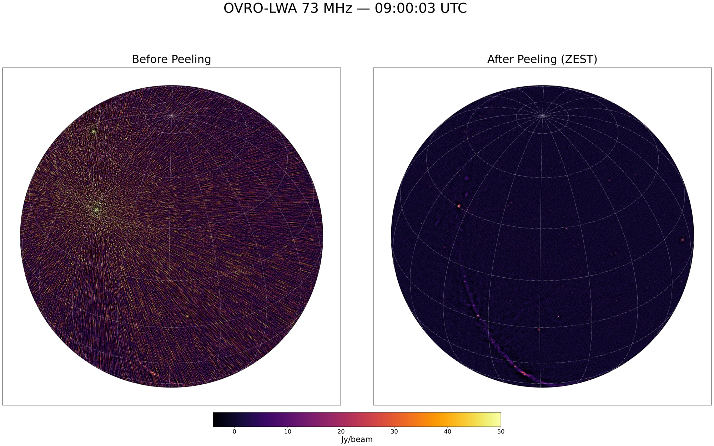
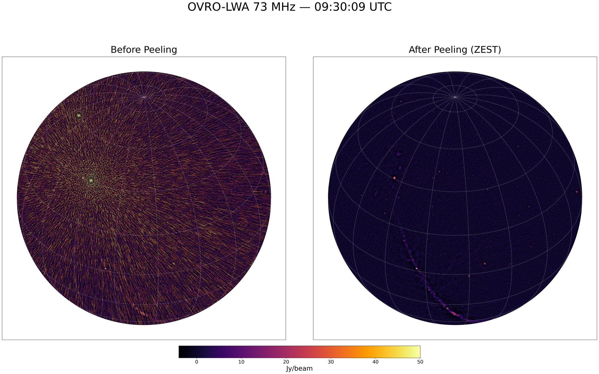

Tutorial
A detailed walkthrough of using TTCalX for direction-dependent calibration, from quick verification to full production workflows.
Table of Contents
- Quick Test (Example Dataset)
- Full Workflow on Calim (Single MS)
- Batch Processing on Calim (Multiple MS)
- Example Results
Quick Test (Example Dataset)
A small test dataset (6 channels, ~22 MB) is included in examples/ for quick verification. This MS was extracted from a calibrated OVRO-LWA observation at 73 MHz.
Set up a working directory and run the quick test on calim:
ttcalx_env
# Create a working directory and copy the example MS (never modify originals)
mkdir -p /lustre/$USER/ttcalx_test && cd /lustre/$USER/ttcalx_test
cp -r /opt/devel/nkosogor/nkosogor/TTCalX/examples/20240524_090003_73MHz_ch0to5.ms test_zest.ms
# Run zest (use --column=DATA for split data)
ttcalx zest /home/pipeline/sources.json test_zest.ms \
--column=DATA --verbose --maxiter=30 --tolerance=1e-4 --minuvw=10Image the peeled data with wsclean (dirty image):
After peeling, TTCalX writes the calibrated visibilities back to the DATA column. Make a quick dirty image to verify using the orca Python wrapper:
from pathlib import Path
from orca.wrapper.wsclean import wsclean
ms = Path("test_zest.ms").resolve()
out_dir = Path("images").resolve()
out_dir.mkdir(parents=True, exist_ok=True)
wsclean(
ms_list=[str(ms)],
out_dir=str(out_dir),
filename_prefix="peeled_73MHz_test",
extra_arg_list=[
"-pol", "IV",
"-size", "4096", "4096",
"-scale", "0.03125",
"-niter", "0",
"-weight", "briggs", "0",
"-horizon-mask", "10deg",
"-taper-inner-tukey", "30",
],
num_threads=4,
mem_gb=50,
)Full Workflow on Calim (Single MS)
A typical OVRO-LWA calibration workflow: copy data → apply bandpass/delay calibration → peel/zest bright sources → image.
Step 1: Copy data to working directory
Always work on a copy — never modify pipeline originals.
mkdir -p /lustre/$USER/ttcalx_test && cd /lustre/$USER/ttcalx_test
cp -r /lustre/pipeline/night-time/averaged/73MHz/2024-05-24/09/20240524_090003_73MHz_averaged.ms .
ls -ld 20240524_090003_73MHz_averaged.msStep 2: Apply bandpass and delay calibration
ttcalx_env
cd /lustre/$USER/ttcalx_test
python3 -c "
from casatasks import applycal
MS = '20240524_090003_73MHz_averaged.ms'
DELAY_TABLE = '/lustre/pipeline/calibration/delay/2024-05-24/20240524_delay.delay'
BANDPASS_TBL = '/lustre/pipeline/calibration/bandpass/73MHz/2024-05-24/11/bandpass_concat.73MHz_11.bandpass'
applycal(
vis=MS,
gaintable=[DELAY_TABLE, BANDPASS_TBL],
calwt=[False],
flagbackup=True,
)
"Step 3: Peel/zest bright sources with TTCalX
ttcalx zest /home/pipeline/sources.json 20240524_090003_73MHz_averaged.ms \
--verbose --maxiter=30 --tolerance=1e-4 --minuvw=10Step 4: Image with wsclean
from pathlib import Path
from orca.wrapper.wsclean import wsclean
ms = Path("20240524_090003_73MHz_averaged.ms").resolve()
out_dir = Path("images").resolve()
out_dir.mkdir(parents=True, exist_ok=True)
wsclean(
ms_list=[str(ms)],
out_dir=str(out_dir),
filename_prefix="zested_73MHz",
extra_arg_list=[
"-pol", "IV",
"-size", "4096", "4096",
"-scale", "0.03125",
"-niter", "0",
"-weight", "briggs", "0",
"-horizon-mask", "10deg",
"-taper-inner-tukey", "30",
],
num_threads=4,
mem_gb=50,
)Batch Processing on Calim (Multiple MS)
Process multiple MS files end-to-end: copy → applycal → zest in batch.
Step 1: Copy data to working directory
mkdir -p /lustre/$USER/ttcalx_batch && cd /lustre/$USER/ttcalx_batch
SRC=/lustre/pipeline/night-time/averaged/73MHz/2024-05-24/09
cp -r $SRC/20240524_090003_73MHz_averaged.ms .
cp -r $SRC/20240524_093009_73MHz_averaged.ms .
cp -r $SRC/20240524_095904_73MHz_averaged.ms .Step 2: Apply calibration to all files
ttcalx_env
cd /lustre/$USER/ttcalx_batch
python3 -c "
from casatasks import applycal
DELAY_TABLE = '/lustre/pipeline/calibration/delay/2024-05-24/20240524_delay.delay'
BANDPASS_TBL = '/lustre/pipeline/calibration/bandpass/73MHz/2024-05-24/11/bandpass_concat.73MHz_11.bandpass'
ms_files = [
'20240524_090003_73MHz_averaged.ms',
'20240524_093009_73MHz_averaged.ms',
'20240524_095904_73MHz_averaged.ms',
]
for ms in ms_files:
print(f'Applying calibration to {ms}...')
applycal(
vis=ms,
gaintable=[DELAY_TABLE, BANDPASS_TBL],
calwt=[False],
flagbackup=True,
)
print(f' Done: {ms}')
"Step 3: Zest all files in batch mode
Pass all MS files at once so TTCalX only compiles once:
ttcalx zest /home/pipeline/sources.json \
20240524_090003_73MHz_averaged.ms \
20240524_093009_73MHz_averaged.ms \
20240524_095904_73MHz_averaged.ms \
--maxiter=30 --tolerance=1e-4 --minuvw=10Or using a glob:
ttcalx zest /home/pipeline/sources.json *.ms \
--maxiter=30 --tolerance=1e-4 --minuvw=10Step 4: Image all peeled files
from pathlib import Path
from orca.wrapper.wsclean import wsclean
ms_files = [
"20240524_090003_73MHz_averaged.ms",
"20240524_093009_73MHz_averaged.ms",
"20240524_095904_73MHz_averaged.ms",
]
out_dir = Path("images").resolve()
out_dir.mkdir(parents=True, exist_ok=True)
for ms_name in ms_files:
ms = Path(ms_name).resolve()
prefix = ms.stem.replace("_averaged", "_zested")
print(f"Imaging {ms_name} -> {prefix}")
wsclean(
ms_list=[str(ms)],
out_dir=str(out_dir),
filename_prefix=prefix,
extra_arg_list=[
"-pol", "IV",
"-size", "4096", "4096",
"-scale", "0.03125",
"-niter", "0",
"-weight", "briggs", "0",
"-horizon-mask", "10deg",
"-taper-inner-tukey", "30",
],
num_threads=4,
mem_gb=50,
)Expected Performance
Benchmarked on calim server (NVIDIA RTX A4000 16 GB) with 73 MHz data (352 antennas, 48 channels, zest mode):
| MS file | Time | Notes |
|---|---|---|
| 1st file | ~27s | Includes JIT compilation |
| 2nd file | ~5-10s | Full GPU speed |
| 3rd file | ~5-10s | Full GPU speed |
| Average (excl. JIT) | ~5-10s |
Example Results
Below are dirty images (Stokes I, niter=0) showing the effect of peeling with TTCalX.
Quick Test (6 channels)

Full MS (48 channels)
09:00:03 UTC: 
09:30:09 UTC: 
09:59:04 UTC: